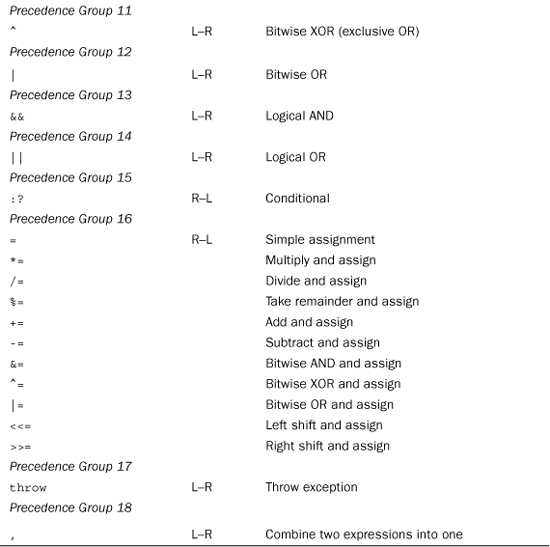

Operator precedence determines the order in which operators are applied to a value. C++ operators come in 18 precedence groups, which are presented in Table D.1. Those in Group 1 have the highest precedence, those in Group 2 have the next-highest precedence, and so on. If two operators apply to the same operand (something on which an operator operates), the operator with the higher precedence applies first. If the two operators have the same precedence, C++ uses associativity rules to determine which operator binds more tightly. All operators in the same group have the same precedence and the same associativity, which is either left-to-right (L–R in the table) or right-to-left (R–L in the table). Left-to-right associativity means to apply the leftmost operator first, and right-to-left associativity means to apply the rightmost operator first.
Table D.1. C++ Operator Precedence and Associativity

Some symbols, such as * and &, are used for more than one operator. In such cases, one form is unary (one operand), and the other form is binary (two operands), and the compiler uses the context to determine which is meant. Table D.1 labels operator groups unary or binary for those cases in which the same symbol is used two ways.
The following are some examples of precedence and associativity.
Here’s an example in which the compiler has to decide whether to add 5 to 3 or multiply 5 by 6:
3 + 5 * 6
The * operator has higher precedence than the + operator, so it is applied to the 5 first, making the expression 3 + 30, or 33.
Here’s an example in which the compiler has to decide whether to divide 6 into 120 or multiply 6 by 5:
120 / 6 * 5
Both / and * have the same precedence, but these operators associate from left to right. That means the operator to the left of the shared operand (6) is applied first, so the expression becomes 20 * 5, or 100.
Here’s an example in which the compiler has to decide whether to begin by incrementing str or by dereferencing str:
char * str = "Whoa";
char ch = *str++;
The postfix ++ operator has higher precedence than the unary * operator. This means the increment operator operates on str and not *str. That is, the operation increments the pointer, making it point to the next character, rather than altering the character pointed to. However, because ++ is the postfix form, the pointer is incremented after the original value of *str is assigned to ch. Therefore, this expression assigns the character W to ch and then moves str to point to the h character.
Here’s a similar example:
char * str = "Whoa";
char ch = *++str;
The prefix ++ operator and the unary * operator have the same precedence, but they associate right-to-left. So, again, str and not *str is incremented. Because the ++ operator is in prefix form, first str is incremented, and then the resulting pointer is dereferenced. Thus, str moves to point to the h character, and the h character is assigned to ch.
Note that Table D.1 uses binary or unary in the “Precedence” column to distinguish between two operators that use the same symbol, such as the unary address operator and the binary bitwise AND operator.
Appendix B, “C++ Reserved words,” lists alternative representations for some of the operators.